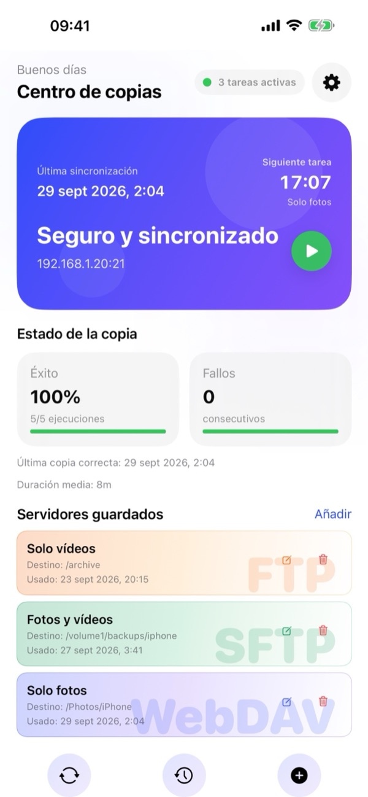
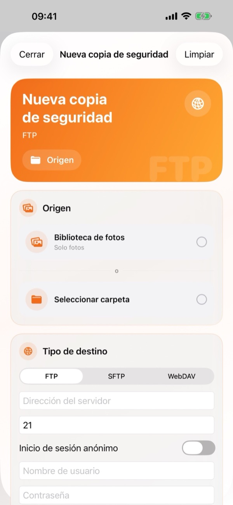
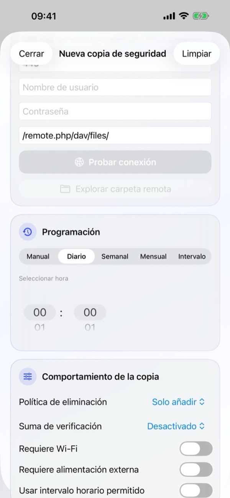
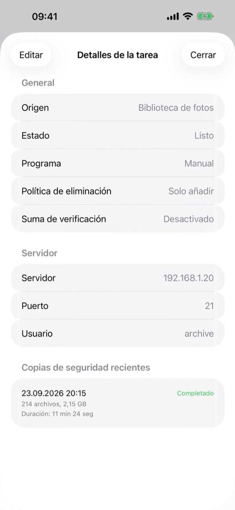
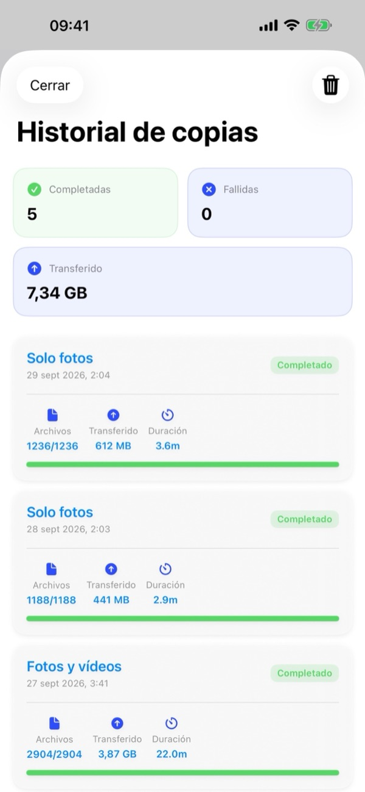
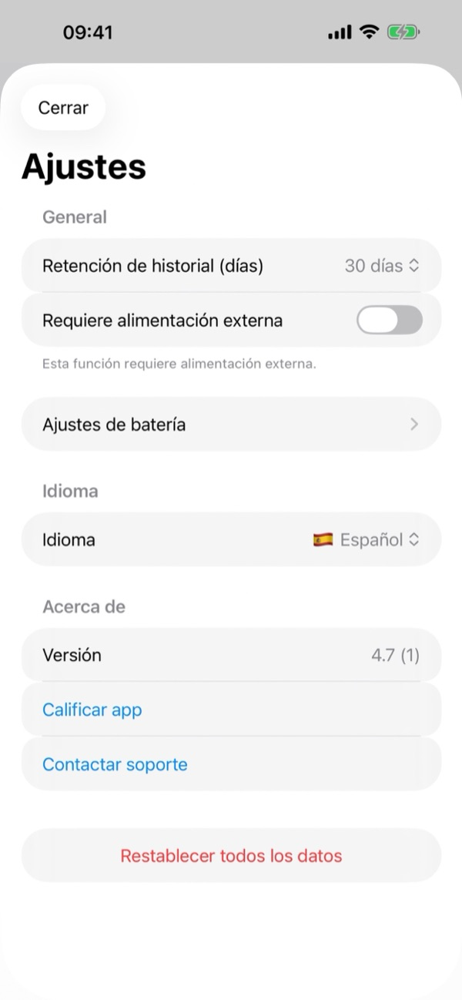

1. Qué necesitas
- Un servidor compatible: Cualquier NAS (Synology, QNAP, TrueNAS, Unraid), servidor doméstico o nube personal (Nextcloud, ownCloud, WebDAV) compatible con FTP, SFTP (SSH) o WebDAV (HTTP/HTTPS).
- Datos de acceso: Dirección del servidor, puerto (FTP 21, SFTP 22, WebDAV 443/80), Nombre de usuario y Contraseña (o inicio anónimo para FTP).
- Permisos de iOS: Acceso completo a Fotos, acceso a Red local (si el servidor está en tu red doméstica) y Notificaciones.
2. Vista general del Centro de copias
Al abrir BackupFlow, el Centro de copias muestra en tiempo real el estado de tus copias de seguridad:
- Tarjeta de estado: Muestra la última sincronización, la hora de la próxima tarea, el estado de protección, la dirección del servidor y el botón verde Reproducir (▶) para iniciar una copia al instante.
- Salud de las copias: Muestra el porcentaje de éxito, los fallos consecutivos, la fecha de la última copia exitosa y la duración media.
- Servidores guardados: Tarjetas para tus tareas FTP, SFTP y WebDAV con botones rápidos para Editar (✏️) o Eliminar (🗑️). Toca cualquier tarjeta para abrir los Detalles de la tarea.
- Barra inferior y Ajustes: Usa los tres botones inferiores para Sincronizar (🔄), abrir el Historial de copias (🕒) o crear una Nueva copia de seguridad (+). El icono de engranaje (⚙️) arriba a la derecha abre Ajustes.

3. Crear una nueva copia de seguridad
Toca el botón + en la parte inferior del Centro de copias (o Añadir junto a Servidores guardados) para abrir Nueva copia de seguridad:
- Origen: Elige Biblioteca de fotos (solo fotos, solo vídeos o ambos) o toca Seleccionar carpeta para elegir cualquier carpeta de la app Archivos de iOS.
- Tipo de destino: Selecciona FTP, SFTP o WebDAV. Introduce la dirección del servidor, el puerto, el Nombre de usuario, la Contraseña y la ruta remota (ej.
/remote.php/dav/files/). Toca Probar conexión y opcionalmente Explorar carpeta remota para elegir la carpeta en tu servidor. - Programación: Elige Manual, Diario, Semanal, Mensual o Intervalo, y define la hora en Seleccionar hora.
- Comportamiento de la copia: Configura la Política de eliminación, la Suma de verificación y las condiciones de red/energía, y guarda la tarea.
Tras la primera copia completa, solo se envían los archivos nuevos o modificados, haciendo que las siguientes copias sean mucho más rápidas.


4. Detalles y gestión de tareas
Toca cualquier tarea en Servidores guardados para ver los Detalles de la tarea:
- General: Revisa el origen, el estado actual, la programación, la Política de eliminación y la Suma de verificación.
- Servidor: Consulta la dirección del servidor, el puerto y el usuario.
- Copias recientes: Revisa las últimas ejecuciones de esa tarea con fecha, estado, archivos transferidos, tamaño y duración.
- Toca Editar arriba a la izquierda para modificar cualquier ajuste de la tarea.

5. Programación y condiciones
En Programación puedes elegir: Manual, Diario, Semanal, Mensual o Intervalo, ajustando la hora en Seleccionar hora.
En Comportamiento de la copia puedes definir cuándo se permite ejecutar la copia automática:
- Requiere Wi-Fi: Evita el uso de datos móviles.
- Requiere alimentación externa: Solo se ejecuta mientras el iPhone se está cargando.
- Usar intervalo horario permitido: Limita las copias automáticas a una franja horaria (por ejemplo, de noche).
- Nivel mínimo de batería (en Ajustes › Ajustes de batería): Omite la copia si la batería está baja.
6. Política de eliminación, Suma de verificación e iCloud
En Comportamiento de la copia controlas qué ocurre en el servidor cuando borras archivos en el iPhone y cómo se verifican las subidas:
- Política de eliminación › Solo añadir
- Nunca se borra nada del servidor. Recomendado si planeas borrar fotos o vídeos del iPhone para liberar espacio después de hacer la copia.
- Política de eliminación › Espejo
- Mantiene la carpeta del servidor como una copia exacta del origen. Los archivos borrados en el iPhone también se eliminan del servidor.
- Política de eliminación › Archivado al borrar
- Los archivos eliminados en el iPhone se mueven a una carpeta con fecha .backupflow_archive en el servidor.
- Suma de verificación
- Comprueba que cada archivo llegue intacto al servidor tras la subida (por defecto Desactivado para máxima velocidad).
Consejo para Fotos en iCloud: Activa Descargar elementos de iCloud si es necesario para copiar también los originales que solo están almacenados en iCloud.
7. Copias en segundo plano
BackupFlow utiliza BGTaskScheduler de iOS para ejecutar copias programadas en segundo plano. Dado que iOS decide el momento exacto según el uso y la batería, una tarea programada puede comenzar unos minutos después de la hora elegida o enviarte una notificación.
Si iOS detiene una copia antes de terminar, abre BackupFlow y continuará automáticamente omitiendo los archivos ya enviados. Para una primera copia grande, mantén el iPhone conectado al Wi-Fi y a la corriente.
8. Historial de copias
Toca el botón central Historial (🕒) en la barra inferior del Centro de copias:
- Tarjetas de resumen: Consulta el total de copias completadas, fallidas y el total de datos transferidos (GB/MB).
- Registros detallados: Cada entrada muestra el nombre de la tarea, la fecha, los archivos transferidos, el tamaño y la duración. Usa el icono de papelera (🗑️) arriba a la derecha para borrar el historial.

9. Ajustes de la aplicación
Toca el icono de engranaje (⚙️) arriba a la derecha en el Centro de copias para abrir Ajustes:
- Retención de historial (días): Elige cuántos días se guarda el historial (ej. 30 días).
- Requiere alimentación externa y Ajustes de batería: Reglas globales de energía y nivel mínimo de batería.
- Idioma: Cambia el idioma de la aplicación al instante entre los 12 idiomas disponibles.
- Acerca de: Consulta la Versión, toca Valorar aplicación o Contactar soporte.
- Restablecer todos los datos: Elimina todas las tareas, el historial y las contraseñas guardadas de este iPhone sin tocar los archivos de tus servidores.

10. Solución de problemas
- No puedo conectar con mi servidor.
- Revisa la dirección, el puerto (FTP 21, SFTP 22, WebDAV 443/80), el usuario y la contraseña. Si el servidor está en casa, asegúrate de que el iPhone está en el mismo Wi-Fi y de que el permiso está activo en Ajustes del iPhone › Privacidad y seguridad › Red local › BackupFlow.
- Una copia programada no se ejecutó.
- Revisa las condiciones en Comportamiento de la copia (Wi-Fi, alimentación, intervalo horario, batería) y los permisos de notificaciones.
- Faltan algunas fotos.
- Concede acceso completo a Fotos y activa Descargar elementos de iCloud si es necesario.
- Han desaparecido archivos de mi servidor.
- Cambia la Política de eliminación de la tarea de Espejo a Solo añadir o Archivado al borrar.
- Aviso de seguridad SFTP.
- La huella SSH del servidor ha cambiado. Es normal si reinstalaste o cambiaste el servidor; de lo contrario, consulta con el administrador.
11. Privacidad y seguridad
Tus archivos van directamente desde tu iPhone a tu propio servidor. BackupFlow no tiene servidores propios, nunca ve tus archivos y no recopila datos ni estadísticas. Las contraseñas se guardan cifradas en el Llavero de iOS (Keychain). Consulta nuestra Política de privacidad completa.
12. ¿Necesitas ayuda?
Ve a Ajustes › Contactar soporte dentro de la app (o escribe a tamersavasci@icloud.com). La versión de la app y el modelo del dispositivo se adjuntan automáticamente.